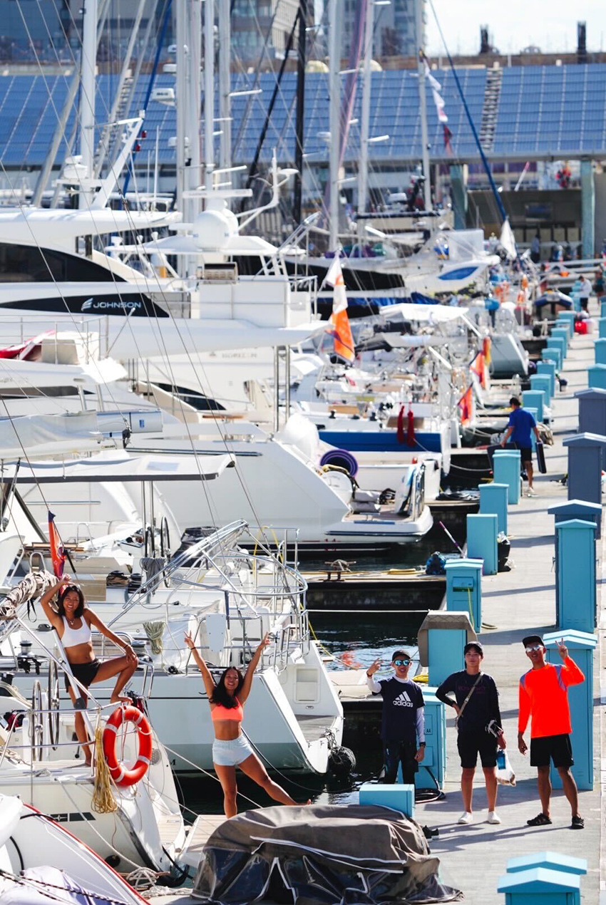

那天下午搭著前往馬公的飛機，心裡滿是安心與興奮，因為已經度過將近一週害怕確診的憂慮心裡，每天都過得非常小心翼翼，深怕自己一不小心確診，就無法搭上這班飛往澎湖馬公的班機，就也無法參與今年臺灣每年夏天都會舉辦的『澎湖島帆船週系列賽』，好險身體很乖巧，沒有染上肺炎，成功開啟了這趟澎湖的比賽旅程。
 |
| 澎湖港口景色 |
飛機一抵達澎湖，就馬上搭著接駁車出發亞果遊艇碼頭，前往檢查這次要比賽的船隻狀況，因為這次邀請我們上船當水手的船主是租船參與這次的比賽，所租令的船隻也是我們以前沒有開過的帆船，因此要使用不熟悉的船隻進行比賽，賽前都須要先觀察船隻的系統，熟悉繩索帆具的走向，也要下水檢查船底的狀況，確認船隻在比賽時，擁有最大速度的航行效率，因為水上與水下的水阻，分分毫豪都對比賽有莫大的影響。
確認船隻狀況都沒有問題後，剛好當天澎湖晚上有花火節，我們快速的準備好晚餐，就開著我們的比賽船隻，出海前往澎湖觀音亭外海，準備從海上觀賞花火節的煙火施放，雖然已經看過很多次花火節的煙火，但每一次再從海上看煙火，還是覺得很輕鬆浪漫。
| 隊友與海上花火節煙火 |
第二天的澎湖是一天沒有賽程的空檔，一大早八點我們就在碼頭集合，打算出海練船，測試一下這艘新朋友帆船的性能，關於能航行的極限角度與帆具能承受的極限力量，都是需要在海上航行才能了解的數據，還有我們船員之間跟這艘船的配合默契，也都需要培養，於是我們在海上練習與感情培養了一個上午，下午過後就錨泊於澎湖西嶼外海附近，下海泡水玩水，洗淨一早練船的汗水與疲憊。
隔天睡醒就迎來這次比賽的第一場賽程，虎井嶼繞島賽，顧名思義為繞著虎井嶼的比賽，賽事單位會設計幾個航點，每艘比賽船隻要繞過這幾個點，最後抵達終點線，最快抵達的船隻獲勝，而這幾個航點會繞著虎井嶼佈置，相當於繞虎井嶼一圈。當天出海風最大將近有19節風，還有暴雨伺候，一邊淋雨一邊準備啟航，真的是感受到幾分熱血，啟航後一直維持迎風航段的航行，不停的尋找賽程標點，不停的想辦法增加與維持船隻的速度，不停的追逐其他比賽船隻，在迎風段成功超越不少同組別的船隻，但在繞過虎井嶼變成順風航段時，風逐漸變小，對於我們的船隻有弱勢，於是又被幾艘船隻超越，最後是同組別第三艘抵達終航線，結束這天的賽程。
 |
| 繞島賽航行畫面 |
澎湖第四天迎來第二場賽程，為觀音亭外海的繞標賽，繞標賽不同於繞島賽的是，繞標賽距離比較短，對於航行策略與航線的選擇需要有更謹慎快速的抉擇，而這天的天氣有別於昨天也是相差甚遠，到達預定要發啟航信號的時間風還是微微弱弱，海面也是沒有波浪紋路的鏡面海，導致啟航時間延後，最終在大概七八節風的情況下，開啟了賽程。
| 沒風的鏡面海與裁判船，裁判船上會舉著RC旗子 |
| 等待繞標賽啟航信號發布的各艘船隻 |
發了兩局的繞標賽，由於啟航路線的錯誤評估，與微風天氣，兩局比賽都沒有拿到前面的名次，也失去上台領獎的機會，但是比賽好玩刺激的地方一直都是過程，還有在海上陸地上與老友們相聚的快樂，這場『澎湖島帆船週系列賽』算是臺灣每年度的大型帆船賽事，會把各地的帆船好朋友聚集於澎湖，大家一起比拼玩樂，度過快樂的時光。
|  |
| 與各船好友的合照 |
| 頒獎典禮後的大合照 |